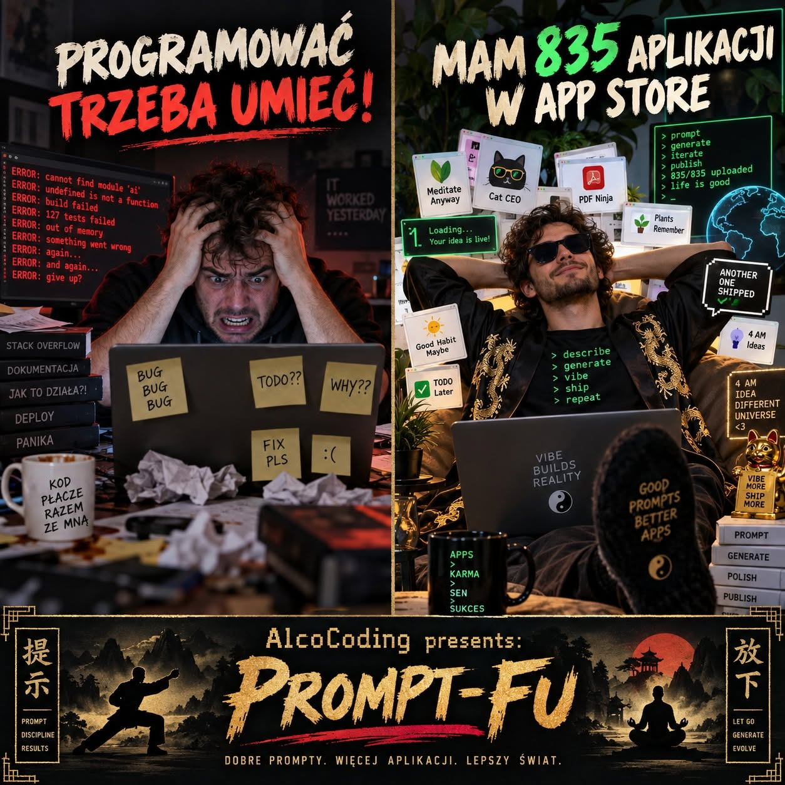

Reklamy Vibe Coding
Kanonical: ten adres. Kopia na FB: zobacz post na Facebooku.

Widzieliście te reklamy vibe codingu w stylu👇🏻
– spanikowany człowiek: „Programować trzeba umieć!”
– wyluzowany koleś: „Mam 835 aplikacji w App Store.”
Ja widziałem 🫣.
Dlatego postanowiłem coś z tym zrobić. Czy podjąłem trzydniowe wyzwanie kodowania z AI? Oczywiście, że nie.
Był weekend. Jeśli zrobiłem {deploy}, to raczej w toalecie, a nie na {produkcji}. Choć fakt: na chwilę straciłem {preview} z oczu.
Zakładam więc własne dojo i promuję nowy styl walki:
# Prompt-Fu.
Pozwólcie, że się przedstawię.
Jestem AlcoCoder.